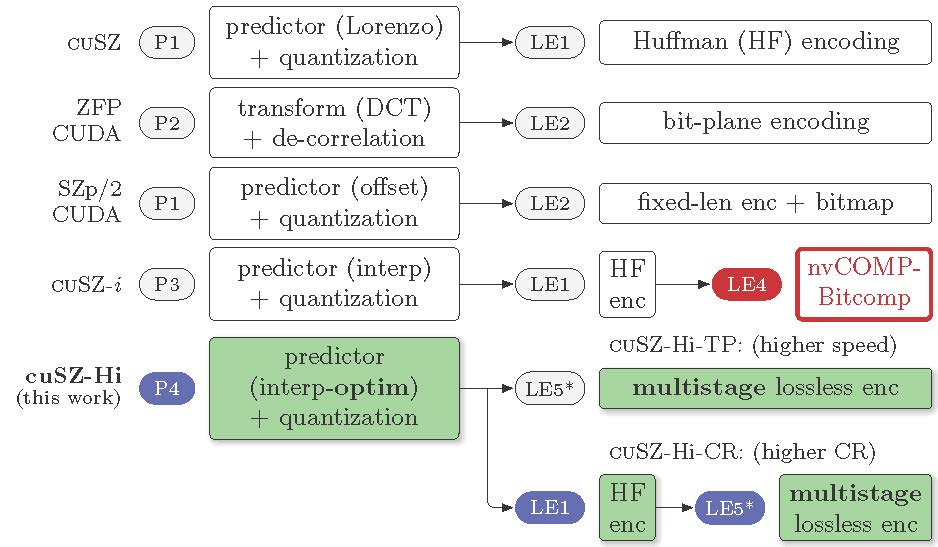

Projects (selected)
- cuSZ-Hi: Boosting Scientific Error-Bounded Lossy Compression through Optimized Synergistic Lossy-Lossless Orchestration [Code Link]
- cuSZ-Hi is a fully open-source high-ratio scientific error-bounded lossy compressor on GPUs.
- Based on cuSZ-I, we further optimized the high-throughput interpolation-based data prediction on GPU platforms, proposing a new scientific data prediction module with multiple interpolation schemes and auto-tuned configurations
- After an in-depth investigation of existing numerical lossless encoders, we craft and incorporate the best-fit lossless encoding pipelines for maximizing the compression ratio on GPUs.
- cuSZ-Hi exhibits outperforming compression ratio and quality compared to all existing state-of-the-arts. It can achieve up to 249% compression ratio improvement over existing scientific lossy compressors under the same error bound and up to 215% compression ratio improvement under the same decompression data PSNR.
- QPET: A Versatile and Portable Quantity-of-Interest-Preservation Framework for Error-Bounded Lossy Compression [Paper Link] [Code Link]
- QPET is a QoI-oriented Point-wise Error-bound auto-tuning framework to enable the preservation of diverse QoIs in scientific applications.
- QPET leverages numerical and probabilistic methods to derive sufficient error bounds on each data point, which easily adapts to most differentiable QoIs.
- QPET effectively determines the best-fit point-wise error bound for each data value in the QoI-preserving compression. It also jointly optimizes the error-bound storage overhead and the reduction in raw data by a dynamic global error bound selection.
- QPET yields significant compression ratio (CR) and throughput gains in QoI-preserving compression tasks. Under the same QoI error threshold, QPET-integrated compressors achieve up to 1000% CR improvements over the general-purpose compressors and up to 133% CR improvements over existing QoI-preserving lossy compressors. It also achieves 2x to 10x compression speedups over existing QoI-preserving scientific lossy compression solutions.
- cuSZ-I: High-Fidelity Error-Bounded Lossy Compression for Scientific Data on GPUs [Paper Link]
- We develop a GPU-customized interpolation-based data predictor G-interp with highly parallelized efficient interpolation, which can present excellent data prediction accuracy, thus leading to a high overall compression ratio.
- We design and implement a highly lightweight interpolation auto-tuning kernel for GPU interpolation to optimize both performance and compression quality of cuSZ-I.
- We improve the implementation of GPU-based Huffman encoding and import a new lossless module NVIDIA Bitcomp to further reduce its encoding redundancy.
- cuSZ-I improves compression ratio over other state-of-the-art GPU-based scientific lossy compressors extremely, by up to about 500% under the same error bound or PSNR. Meanwhile, it preserves a compression throughput of the same magnitude as other compressors.
- SRN-SZ: Scientific Error-bounded Lossy Compression with Super-resolution Neural Networks [Paper Link]
- We propose a scientific error-bounded lossy compressor SRN-SZ, in which the compression is performed with a hybrid of super-resolution networks and interpolations.
- Leveraging the Hybrid Attention Transformer (HAT) network, we designed a specialized training pipeline with several adaptive techniques to optimize the super-resolution quality of scientific data.
- According to the experimental results, SRN-SZ has achieved up to 75% compression ratio improvements under the same error bound and up to 80% compression ratio improvements under the same PSNR.
 QoZ 2.0 (HPEZ): High-performance Effective Scientific Error-bounded Lossy Compression with Auto-tuned Multi-component Interpolation [Paper Link] [Code Link]
QoZ 2.0 (HPEZ): High-performance Effective Scientific Error-bounded Lossy Compression with Auto-tuned Multi-component Interpolation [Paper Link] [Code Link]
- Founded on theoretical analysis and algorithmic optimizations, QoZ 2.0 substantially upgrades the most critical step in the quality-oriented compression -- interpolation prediction, leading to an immensely improved data prediction accuracy.
- QoZ 2.0 develops a series of optimization strategies including block-wise interpolation tuning, dynamic dimension freezing, and Lorenzo tuning, which can substantially improve the adaptability of the auto-tuning for the compression across a broad spectrum of inputs.
- QoZ 2.0 significantly outperforms state-of-the-art error-bounded lossy compressors in terms of rate-distortion, while still having a satisfactory speed. It preserves a leading speed compared to other high-ratio compressors. Consequently, it achieves the best throughput in distributed data transfer over WAN based on our experiments. QoZ 2.0 exhibits the least time cost in data transfer for most scientific datasets with up to 40% time reduction.
- FAZ: A flexible auto-tuned modular error-bounded compression framework for scientific data [Paper Link]
- FAZ is a flexible and adaptive error-bounded lossy compression framework, which projects a fairly high capability of adapting to diverse datasets.
- FAZ contains different compression modules which having same or similar functionalities, and dynamically selects and auto-tunes the best-fit modules in online compression to establish the optimized compression pipeline for each input data.
- After careful selection of compression techniques and design of pipeline auto-tuning methods, the current version of FAZ is a hybrid-framework leveraing both prediction-based and transform-based compression techniques.
- Experiments show that, compared to the second best compressor, FAZ can improve the compression ratio by up to 120%, 190%, and 75% when setting the same error bound, the same PSNR and the same SSIM, respectively.
- QoZ: Dynamic Quality Metric Oriented Error Bounded Lossy Compression for Scientific Datasets [Paper Link] [Code Link]
- QoZ is the first dynamic quality-metric-oriented scientific error-bounded lossy compressor, which can online optimize its compression according to user-specified preferred quality metrics (e.g. PSNR, SSIM, Autocorrelation).
- Based on SZ3 interpolation predictor, QoZ develops and leverages an advanced interpolation-based predictor with high flexibility for auto-tuning, and an effective quality-metric driven auto-tuning algorithm.
- Compared with the second best lossy compressor, QoZ can achieve up to 70% compression ratio improvement under the same error bound, up to 150% compression ratio improvement under the same PSNR, or up to 270% compression ratio improvement under the same SSIM.
- AE-SZ: Exploring Autoencoder-based Error-bounded Compression for Scientific Data
[Paper Link]
- AE-SZ is a deep-learning (autoencoder) based scientific data lossy compressor, which is also a pioneering practice in its time of leveraging deep learning techniques in scientific data compression.
- Like traditional lossy compressors such as SZ, AE-SZ has full support of error-bounding requirements.
- SWAE (Sliced-Wasserstein Autoencoder) and GDN (Generalized Divisive Normalization) is utilized in AE-SZ for generating effective compressed representation of the original input data. The compressed latent vectors are further quantized to maximally improve the compression ratio.
- Based on SZ3 interpolation predictor, QoZ develops and leverages an advanced interpolation-based predictor with high flexibility for auto-tuning, and an effective quality-metric driven auto-tuning algorithm.
- AE-SZ can obtain a much better compression quality (100%-800% improvement in compression ratio with the same data distortion) compared with SZ2.1 and ZFP in cases with high compression ratios.